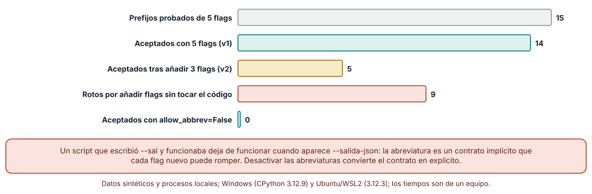
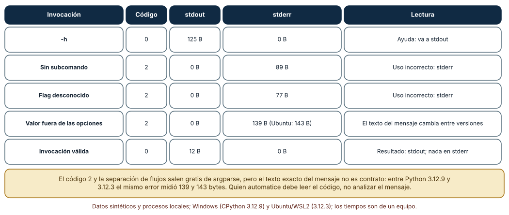
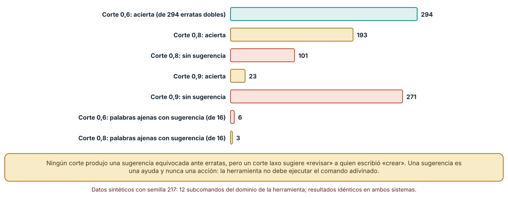

← SE-216 — Proyecto: portal documental versionado · ↑ Parte 18 · 📚 Índice completo · 🌐 Portal · SE-218 — Entrada estándar, salida y composición por pipes →
Punto profesional y fundamento pedagógico
Punto profesional. La clase existe para diseñar una interfaz de línea de comandos como un contrato con dos lectores —una persona que escribe y un programa que invoca— de modo que cambiar un flag, un mensaje o un código no rompa ni a la persona que lo memorizó ni al guion que lo automatizó.
Por qué aparece aquí. Se sitúa después de Proyecto: portal documental versionado (SE-216), que dejó documentación que alguien debe poder seguir, y antes de Entrada estándar, salida y composición por pipes (SE-218). Aquí se fija la superficie de la herramienta notas de la plataforma de entregas —un caso sintético— y se pregunta qué prometen sus flags, su ayuda y sus errores; SE-218 pregunta cómo fluyen los datos por esa superficie.
Error conceptual que debe corregir. Creer que una CLI es «un script con argumentos» y que sus flags, sus abreviaturas y el texto de sus errores son detalles internos que pueden cambiar sin aviso. Para quien la automatiza, cada flag aceptado es una promesa; el texto de un mensaje, en cambio, no lo es.
Secuencia de aprendizaje. Antes de leer la solución, predices cuántas abreviaturas de flags seguirán valiendo cuando la herramienta pase de cinco a ocho opciones; después mides el código de salida y el flujo de cada tipo de invocación y comparas dos umbrales de sugerencia ante errores de tecleo. La secuencia usa predicción, explicación propia, contraste y recuperación. ICAP distingue participación de construcción de conocimiento; How People Learn II exige conectar conocimiento previo, contexto y transferencia; la práctica de recuperación respalda producir de nuevo la explicación tras una demora; y Education for Life and Work exige devolución que explique la causa del error.
Evidencia de aprendizaje. cli-contract.md con la gramática de la herramienta, una tabla de invocaciones con código, flujo y tamaño de salida, la medición de abreviaturas antes y después de añadir flags y la política de sugerencias. Debe contener predicción previa, observación, explicación causal, contraejemplo y qué hallazgo haría retirar un flag.
Límite de la conclusión. Los experimentos usan argparse de CPython 3.12 y cinco a ocho flags inventados; no se auditó ninguna herramienta real, no se midió cómo leen la ayuda las personas y las erratas son sintéticas (semilla 217), no las de usuarios reales.
Trazabilidad fuente → afirmación
| Fuente primaria u oficial | Afirmación que respalda | Lo que no prueba |
|---|---|---|
| Command Line Interface Guidelines | Recoge principios de diseño: ayuda accesible, errores legibles, salida para personas y para programas, y no romper la compatibilidad. | Son recomendaciones de autores, no un estándar ni una medición. |
| POSIX: Utility Conventions | Define la sintaxis de opciones de una sola letra, su agrupación, los argumentos de opción y el delimitador --. | No cubre las opciones largas ni los subcomandos modernos. |
| GNU Coding Standards: Command-Line Interfaces | Fija --help y --version como opciones estándar y recomienda opciones largas legibles. | Es una convención del proyecto GNU, no una norma universal. |
Python: argparse | Documenta allow_abbrev, los subanalizadores y el código de salida 2 de un uso incorrecto. | No dice cuándo conviene permitir abreviaturas. |
Antes de empezar
Recupera lo aprendido en SE-216: una documentación vale por lo que una persona puede hacer siguiéndola. La pregunta activa es: ¿qué promete cada parte visible de la herramienta, a quién y durante cuánto tiempo?
Prerrequisitos
- Haber completado
SE-216o poder explicar qué documentación necesita quien usa una herramienta. - Python 3.11 o posterior y un terminal (PowerShell, bash o WSL2); la biblioteca estándar basta.
- Trabajar con la herramienta sintética
notasy datos inventados.
Problema auténtico
El equipo de operaciones de la plataforma de entregas usa notas exportar desde un guion nocturno. Un viernes se añaden tres opciones nuevas al comando y el guion, que escribía --sal informe.csv desde hacía meses, empieza a fallar con «ambiguous option». Nadie había leído la ayuda: el guion funcionaba por una abreviatura que nunca se prometió. Al revisar, se descubre además que la ayuda sale por el error estándar en una versión y que un script analiza el texto de un mensaje de error que cambió.
Objetivos observables
Al terminar podrás:
- describir la gramática de una herramienta (subcomandos, flags, argumentos) y distinguir lo que es contrato de lo que es presentación;
- medir cuántas abreviaturas de flags dejan de valer cuando se añaden opciones y decidir si se permiten;
- verificar qué código y qué flujo produce cada tipo de invocación y escribir la tabla que otra persona puede comprobar;
- comparar umbrales de sugerencia ante errores de tecleo y justificar por qué una sugerencia no debe ejecutarse sola;
- definir una política de compatibilidad para flags: añadir, deprecar y retirar.
Mapa conceptual
Ver la notación fuente del diagrama
flowchart LR
P[Persona] -->|teclea| G[Gramática]
S[Guion] -->|invoca| G
G --> A[Ayuda]
G --> E[Error de uso]
G --> R[Resultado]
A -->|stdout, código 0| P
E -->|stderr, código 2| S
R -->|stdout, código 0| S
G -->|cambia| C[Compatibilidad]
C -->|rompe a| SEl mapa se lee como un reparto: la gramática es el punto en que coinciden dos lectores; la ayuda y los errores tienen destinos distintos; y un cambio de gramática viaja hacia quien automatiza. No describe una secuencia de ejecución.
Temas y por qué importan
| Tema | Por qué cambia una decisión profesional | Evidencia mínima |
|---|---|---|
| Gramática y convenciones | Seguir las convenciones reduce lo que hay que aprender y lo que hay que documentar. | Predicción, traza causal y contraejemplo de Gramática en cli-contract.md |
| Ayuda y descubribilidad | La ayuda es la primera documentación y debe poder consumirse sin romper una tubería. | Predicción, traza causal y contraejemplo de Ayuda en cli-contract.md |
| Errores de uso | Un código y un flujo estables permiten automatizar; un mensaje claro permite corregir. | Predicción, traza causal y contraejemplo de Errores de uso en cli-contract.md |
| Abreviaturas y sugerencias | Aceptar de más crea promesas implícitas; sugerir de más induce a error. | Predicción, traza causal y contraejemplo de Abreviaturas en cli-contract.md |
| Compatibilidad | Un flag aceptado es una promesa; retirarlo es un cambio de contrato. | Predicción, traza causal y contraejemplo de Compatibilidad en cli-contract.md |
Conceptos y decisiones
1. Una CLI es una API con dos lectores
Una persona lee la ayuda, teclea con prisa y tolera un mensaje largo; un programa lee un código de salida, un flujo y, a veces, un formato. Los dos usan la misma gramática, pero esperan cosas distintas de ella. De ahí sale la primera regla de diseño: separar lo que es contrato (flags aceptados, significado, código de salida, destino de cada flujo) de lo que es presentación (el texto exacto de la ayuda y de los errores, el color, el ancho). El contrato se versiona y se prueba; la presentación puede mejorar sin aviso. Confundirlas es la causa de los guiones que analizan el texto de un mensaje.
2. Gramática: subcomandos, flags y argumentos
Las convenciones POSIX describen opciones de una letra (-v), su agrupación (-vq) y el delimitador -- que indica «lo que sigue no son opciones»; las GNU añadieron opciones largas (--verbose) y --help/--version. Una herramienta con varias acciones suele organizarse en subcomandos (notas exportar, notas validar), cada uno con sus propias opciones. La decisión de diseño es de qué depende el significado: un flag global afecta a todo, uno de subcomando solo a ese. Una gramática regular —los mismos nombres para lo mismo— se aprende una vez; una irregular se consulta siempre. Los booleanos son otro punto delicado: --force activa, pero ¿cómo se desactiva algo que por defecto está activo? Diseñar el par (--color / --no-color) o un valor explícito evita que la ausencia de flag signifique dos cosas.
3. Ayuda y descubribilidad
La ayuda solicitada (-h, --help) es un resultado esperado, no un error: sale por el flujo estándar con código 0, de modo que se pueda paginar (notas --help | less) y que un guion pueda comprobar que la herramienta existe. Una buena ayuda trae uso, descripción de cada flag con su valor por defecto y uno o dos ejemplos reales: es lo que más se copia. La descubribilidad incluye lo que ocurre cuando la persona se equivoca: indicar qué se esperaba, mostrar el uso mínimo y apuntar a la ayuda completa. Un mensaje que solo dice «error» obliga a leer el código fuente.
4. Errores de uso: código y flujo antes que texto
Cuando la invocación es incorrecta, la herramienta escribe en el flujo de error y sale con un código distinto de 0; argparse usa 2. Esa pareja —código y flujo— es lo que un programa puede leer con seguridad. El texto, en cambio, cambia entre versiones del intérprete, de la biblioteca y del idioma. Esto fija una regla para quien automatiza: se comprueba el código, no se busca una frase. Y una para quien diseña: el mensaje debe decir qué falló, qué se esperaba y cómo corregirlo, y no incluir datos sensibles que el usuario escribió, porque los mensajes terminan en registros.
5. Compatibilidad: añadir es barato, retirar es caro
Añadir un flag nuevo no rompe a nadie… salvo que las abreviaturas estén activadas. Renombrar, cambiar un valor por defecto o cambiar el significado de un código sí rompe. Una política razonable: los flags se añaden con un nombre que no sea prefijo de otro; los retirados se deprecan primero (siguen funcionando, avisan por el flujo de error y se anuncian con fecha) y se eliminan en una versión mayor; los cambios de comportamiento se registran en el historial de cambios. El mismo principio reaparece en SE-225 (versiones) y en la compatibilidad de contratos de SE-164.
Cinco flags, ocho flags: las abreviaturas son un contrato implícito
La herramienta notas exportar tiene cinco opciones largas: --formato, --salida, --desde, --hasta y --verboso. Con argparse por defecto, cualquier prefijo no ambiguo vale. Se probaron los 15 prefijos de una o más letras que dejan sin escribir al menos tres letras del nombre (--s, --sa, --sal, --f, --fo…): 14 se aceptan en la versión 1 (--h ya era ambiguo con --help). Se añadieron tres opciones (--forzar, --salida-json, --verificar) y se repitió la prueba: solo 5 de esos 14 siguen aceptándose; 9 se rompieron sin cambiar ni una línea del código que las usaba. Por ejemplo, --sal pasó a ser ambiguo entre --salida y --salida-json; siguen valiendo --d, --de, --form, --ha y --verb, y no por mérito: ningún flag nuevo empieza igual. Con allow_abbrev=False no se acepta ninguna abreviatura y no hay nada que romper.
parser = argparse.ArgumentParser(prog="notas", allow_abbrev=False)
sub = parser.add_subparsers(dest="cmd", required=True)
# allow_abbrev no se hereda: hay que repetirlo en cada subanalizador
exportar = sub.add_parser("exportar", allow_abbrev=False)
Cómo leer la figura. La barra gris es el universo de prefijos probados; la teal, los que valían con cinco flags; la dorada, los que valen con ocho; la coral, los que se rompieron. Dónde deja de valer: el cálculo usa nombres inventados; el número de rotos depende de cómo se parezcan los nombres, no de una ley. Lo que generaliza es el mecanismo: un nombre nuevo que es prefijo de otro, o que lo tiene como prefijo, convierte en ambiguas las abreviaturas anteriores.
Qué observa quien invoca: código, flujo y tamaño
Se ejecutó una herramienta con un subcomando exportar y una opción --formato limitada a csv y json. Se midieron cinco invocaciones desde un proceso padre. La ayuda (-h) salió con código 0 y 125 bytes por stdout y ninguno por stderr. Los tres usos incorrectos —sin subcomando, flag desconocido y valor fuera de las opciones— salieron con código 2, sin nada en stdout y con 89, 77 y 139 bytes en stderr. La invocación válida escribió 12 bytes en stdout. En Ubuntu todo coincidió salvo el último mensaje, que midió 143 bytes en lugar de 139: el texto del error cambió entre CPython 3.12.9 y 3.12.3, mientras el código y el flujo no.

Cómo leer la figura. Cada fila es una invocación; las columnas centrales son lo que un programa puede observar sin entender el idioma del mensaje. Dónde deja de valer: son cinco casos de una sola biblioteca; otra biblioteca (o una herramienta escrita a mano) puede usar otro código para el mismo error, y por eso el código se documenta en el contrato en lugar de suponerse.
Sugerir sin adivinar
Un error de tecleo en un subcomando puede ayudarse con una sugerencia («¿quiso decir exportar?»). Con doce subcomandos del dominio de la herramienta y 294 erratas sintéticas de dos ediciones (borrar, insertar, sustituir o transponer una letra, dos veces), difflib.get_close_matches con corte 0,6 acertó las 294; con corte 0,8 acertó 193 y no sugirió nada en 101; con 0,9 acertó solo 23 y calló en 271. Ninguno sugirió un comando equivocado ante una errata. Pero el criterio cambia con palabras que no son erratas: con 16 palabras ajenas (borrar, delete, crear, list, export…), el corte 0,6 produjo sugerencia para 6 —entre ellas crear → revisar, que no tiene relación— y el corte 0,8 para 3.

Cómo leer la figura. Las barras teal son sugerencias correctas ante una errata; las coral, silencios; las de palabras ajenas cuentan sugerencias que no deberían existir. Dónde deja de valer: las erratas son sintéticas y uniformes; las reales se concentran en transposiciones y en teclas vecinas. El resultado enseña un equilibrio, no un umbral universal: más permisivo ayuda más al que se equivoca y confunde más al que busca algo que no existe.
Definiciones de trabajo
- contrato de línea de comandos: conjunto de flags, argumentos, códigos de salida y destinos de flujo que la herramienta promete mantener.
- subcomando: acción con nombre propio dentro de una herramienta (
notas exportar), con sus propias opciones. - abreviatura de flag: prefijo no ambiguo de una opción larga que el analizador acepta si se activa
allow_abbrev. - deprecación: estado en que una opción sigue funcionando pero avisa de su retirada en una versión posterior.
- sugerencia: texto que propone una corrección sin ejecutarla.
Las definiciones son operativas para la herramienta notas. No convierten términos con historia más amplia en sinónimos y deben contrastarse con la documentación primaria enlazada al final.
Ejemplo mínimo
El fragmento define la herramienta y comprueba qué ocurre con una abreviatura. Antes de ejecutarlo, predice si --form sigue valiendo después de añadir --formulario.
import argparse, io, contextlib
def construir(flags, abrev):
p = argparse.ArgumentParser(prog="notas", allow_abbrev=abrev)
for f in flags:
p.add_argument(f, default=None)
return p
def acepta(p, argv):
try:
with contextlib.redirect_stderr(io.StringIO()):
p.parse_args(argv)
return True
except SystemExit as e:
return e.code == 0
v1 = construir(["--formato", "--salida"], True)
v2 = construir(["--formato", "--formulario", "--salida"], True)
print(acepta(v1, ["--form", "x"]), acepta(v2, ["--form", "x"]))La segunda llamada devuelve False: la abreviatura es ahora ambigua. Registra la versión del intérprete y la salida, y repite con abrev=False.
Ejemplo profesional
En la plataforma, notas documenta su contrato en un archivo corto: tabla de flags (nombre, tipo, valor por defecto, desde qué versión), tabla de códigos (0 éxito, 2 uso incorrecto, 65 datos inválidos, 75 fallo temporal), destino de cada flujo y política de deprecación. Las abreviaturas están desactivadas en todos los analizadores, incluidos los de subcomandos. Una prueba de contrato ejecuta la herramienta como lo haría un guion y comprueba código, flujo y presencia de ciertas cadenas en la ayuda; no compara el texto completo. Una segunda prueba falla si alguien añade un flag sin documentarlo.
Compara el caso normal con un flag deprecado, uno renombrado y uno retirado. El diseño es apropiado cuando cada uno de los tres tiene una entrada en el historial de cambios y un periodo en que ambos nombres funcionan; es peligroso cuando el único aviso es el mensaje de una versión mayor.
Práctica guiada
- Escribe en prosa qué promete cada flag de
notas exportary qué no promete. - Predice cuántas abreviaturas dejarán de valer al añadir tres flags; luego mídelo.
- Mide código, flujo y bytes de las cinco invocaciones de la tabla desde un proceso padre.
- Activa y desactiva
allow_abbrevy repite la medición; recuerda repetirlo en el subanalizador. - Genera erratas con una semilla fija, prueba dos umbrales de sugerencia y cuenta aciertos, silencios y sugerencias a palabras ajenas.
- Escribe el contrato (flags, códigos, flujos, deprecación) en
cli-contract.md. - Pide a otra persona que escriba un guion solo desde
cli-contract.mdy comprueba si funciona.
Ejercicios
- Nombres que no se pisan: propón cuatro nombres de flag nuevos para
notas exportary comprueba, con la medición, cuáles no crean ambigüedad con los cinco existentes aun con abreviaturas activadas. - Subanalizador: demuestra con una invocación que
allow_abbrev=Falseen el analizador raíz no impide--formdentro de un subcomando y corrige el defecto. - Deprecación: diseña el aviso de un flag que se retirará en la versión 2: texto, flujo, código (¿cambia?) y cuántas versiones convive.
- Umbral: decide el corte de sugerencia para una herramienta de pocos comandos y otra de cincuenta; justifica con las tres cifras de la clase.
Reto verificable
Entrega cli-contract.md con la gramática de notas, la tabla de invocaciones medida, la comparación de abreviaturas antes y después de añadir flags y la política de sugerencias. Se aprueba si otra persona ejecuta las mediciones desde un checkout limpio, obtiene los mismos conteos con la semilla indicada y puede señalar qué parte del documento es contrato y cuál es presentación. No se aprueba por el número de flags ni por un --help largo.
Caso conductor
La herramienta notas de la plataforma de entregas es el caso conductor de la Parte 18. Esta clase deja su gramática y su contrato de errores. SE-218 pregunta cómo entra y sale la información (entrada estándar, tuberías, codificación), SE-219 cómo se configura y SE-220 qué significan sus códigos. Cambia después un solo detalle, el nombre de --salida a --destino, y revisa qué guiones, ejemplos y documentación dependían de él.
Preguntas frecuentes
¿Conviene permitir abreviaturas para ahorrar teclas?
Para uso interactivo ayudan; para guiones son un riesgo, porque convierten en promesa un prefijo que nadie decidió prometer. Una opción intermedia es dar alias explícitos y cortos (-f para --formato) que sí forman parte del contrato.
¿El mensaje de error forma parte del contrato?
No debería: se midió que el mismo error pesa 139 o 143 bytes entre dos versiones del intérprete. El contrato es el código y el flujo; el mensaje puede mejorar sin que nadie rompa. Si un guion necesita distinguir causas, la herramienta debe ofrecer códigos distintos o una salida estructurada.
¿Por qué la ayuda sale por stdout y no por stderr?
Porque pedirla es un uso correcto. Si saliera por stderr no podría paginarse con una tubería ni redirigirse a un archivo, y un guion que comprueba que la herramienta responde recibiría ruido en el canal de errores.
¿Hay que seguir las convenciones POSIX y GNU?
Sirven como lenguaje común: quien conoce -h y -- no tiene que aprender nada nuevo. Cuando una herramienta se aparta de ellas debe decirlo en la ayuda. El criterio de decisión es el coste para quien llega por primera vez.
Fallo controlado y diagnóstico
Reproduce el fallo clásico de la clase: depender de un prefijo que nadie prometió. Usa los cinco flags de la versión 1 y el guion que escribe --sal x.
Registra síntoma, entrada mínima, hipótesis, observación que descarta cada hipótesis, causa, corrección y prueba de regresión. Síntoma: tras desplegar la versión 2, el guion termina con código 2 y el mensaje de opción ambigua. Hipótesis rivales: (a) se eliminó --salida; (b) cambió el significado de --sal; (c) la abreviatura pasó a ser ambigua. Prueba: notas exportar --salida x funciona; --sal x falla; --salida-json existe desde la versión 2. Conclusión: la causa es la tercera: no cambió ningún comportamiento, cambió el conjunto de nombres. Regresión: desactiva las abreviaturas en el analizador raíz y en cada subanalizador, y añade una prueba que invoque un prefijo y espere código 2. No cambies a la vez los nombres y la política de abreviaturas.
Errores comunes y cómo corregirlos
| Síntoma | Causa probable | Corrección |
|---|---|---|
| Un guion falla después de añadir un flag | Dependía de una abreviatura | Desactivar abreviaturas en todos los analizadores y probar un prefijo |
allow_abbrev=False no surte efecto en un subcomando | La opción no se hereda en los subanalizadores | Pasarla en cada add_parser |
| Un guion analiza la frase del error | El mensaje se trató como contrato | Documentar códigos y ofrecer códigos distintos por causa |
| La ayuda rompe una tubería | Sale por stderr o con código distinto de 0 | Imprimirla en stdout y salir con 0 |
| La sugerencia convence al usuario de un comando equivocado | Corte demasiado laxo | Subir el corte, limitar a una sugerencia y no ejecutarla |
Entorno y archivos clave
work/SE-217/
├── README.md
├── notas_cli.py
├── experimentos/
│ ├── abreviaturas.py
│ ├── contrato.py
│ └── sugerencias.py
└── evidence/cli-contract.mdEl README declara plataforma, versión de Python, semilla (217) y comandos. Los experimentos usan solo la biblioteca estándar (argparse, difflib, subprocess) y se ejecutaron con CPython 3.12.9 en Windows 11 y 3.12.3 en Ubuntu bajo WSL2: las salidas fueron idénticas salvo el tamaño del mensaje de un valor inválido (139 y 143 bytes). Si adoptas una biblioteca de línea de comandos, fija su procedencia y versión.
Seguridad, ética y accesibilidad
- una CLI no debe aceptar un secreto como argumento sin advertir que otros procesos pueden leerlo (se mide en
SE-219); - los mensajes de error no deben repetir datos personales que la persona tecleó: terminan en registros;
- la ayuda debe poder leerse sin color y con lectores de pantalla: texto plano, sin dibujos hechos con símbolos, y con ejemplos copiables;
- la sugerencia de un comando nunca debe ejecutarse automáticamente: la acción es de quien decide;
- respeta las licencias de las bibliotecas de análisis de argumentos y atribuye las adaptaciones.
Puente hacia el trabajo con agentes
Un agente al que se le pide «añade un flag --formulario a la herramienta» suele tocar solo el analizador raíz, no actualiza la documentación y no revisa qué abreviaturas dejan de valer. Pídele que liste todos los flags existentes y los nuevos, que ejecute una prueba de prefijos y que actualice el contrato y el historial de cambios. Revisa especialmente si dejó allow_abbrev activo en un subanalizador y si analizó el texto de un mensaje en una prueba: son los dos fallos de esta clase con apariencia de código correcto.
Transferencia
Traslada el experimento a otra superficie con gramática propia (por ejemplo, la herramienta de despliegue de un equipo con subcomandos plan, aplicar y revertir): escribe su contrato, mide qué prefijos dejan de valer al añadir un subcomando y decide qué códigos prometer. La transferencia está lograda cuando puedes explicar qué parte del método dependía de argparse y cuál era general, no cuando el contrato se parece.
Evaluación y evidencia
| Criterio | Evidencia para aprobar |
|---|---|
| comprensión | explicación de la diferencia entre contrato y presentación en una CLI |
| corrección | tabla reproducible de invocaciones con código, flujo y bytes |
| diseño | política de flags, abreviaturas y deprecación escrita y justificada |
| diagnóstico | reproducción del fallo «abreviatura no prometida» con regresión |
| incertidumbre | declaración de qué mediciones son de una biblioteca y de un equipo |
| reproducibilidad | versiones, semilla, comandos y límites declarados |
Fuentes
- Command Line Interface Guidelines — principios de diseño de interfaces de línea de comandos; autoridad: guía de autores, de uso extendido.
- POSIX: Utility Conventions — sintaxis de opciones y argumentos; autoridad: The Open Group.
- GNU Coding Standards: Command-Line Interfaces —
--help,--versiony opciones largas; autoridad: proyecto GNU. - Python:
argparse—allow_abbrev, subanalizadores y código de salida 2; autoridad: documentación de Python. - Python:
difflib—get_close_matchesy su umbral de similitud; autoridad: documentación de Python.
Cada fuente respalda el mecanismo indicado; ninguna demuestra que la gramática de notas sea la que la plataforma necesita. Esa afirmación depende de quién la usa y de qué automatiza.
- Python:
subprocess— ejecución de la herramienta como proceso hijo para medir código y flujos. - Python:
random— semilla de las erratas sintéticas.
Límites y siguiente paso
Se ejecutaron tres experimentos con datos sintéticos en Windows y Ubuntu (WSL2), con resultados idénticos salvo el tamaño de un mensaje. No se usó ninguna herramienta real, no se midió a ninguna persona usando la ayuda y las erratas, los nombres de flags y los umbrales son supuestos del autor. La siguiente clase pregunta cómo entra y sale la información por la superficie que se acaba de definir.
Glosario
- contrato de línea de comandos: conjunto de flags, argumentos, códigos de salida y destinos de flujo que la herramienta promete mantener.
- subcomando: acción con nombre propio dentro de una herramienta, con sus propias opciones.
- abreviatura de flag: prefijo no ambiguo de una opción larga que el analizador acepta si se activa
allow_abbrev. - deprecación: estado en que una opción sigue funcionando pero avisa de su retirada en una versión posterior.
- sugerencia: texto que propone una corrección sin ejecutarla.
← SE-216 — Proyecto: portal documental versionado · ↑ Parte 18 · 📚 Índice completo · 🌐 Portal · SE-218 — Entrada estándar, salida y composición por pipes →